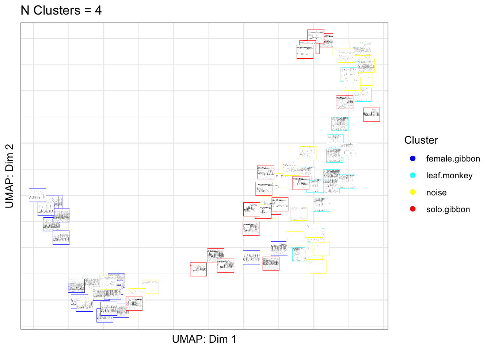
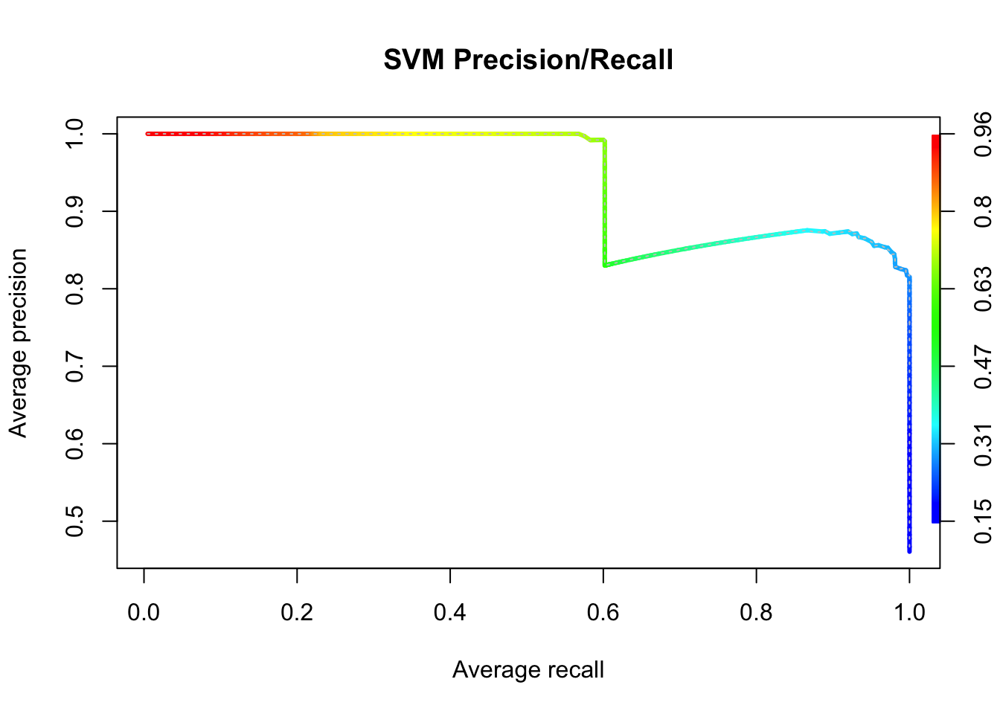

4 Part 3. Calculate performance metrics
4.1 Part 3a. Prepare data for performance metrics
# Set location of test file selection tables
input.dir.text.files <- "/Users/denaclink/Desktop/RStudio Projects/gibbonR/data/SelectionTables/GibbonTestSelectionTables"
Annotatedfiles <- list.files(input.dir.text.files,full.names = T)
ListOfAnnotatedFilesShort <- list.files(input.dir.text.files,full.names = F)
nslash <- str_count(Annotatedfiles,pattern = '/')[1]+1
snames <- str_split_fixed(Annotatedfiles,pattern = '/',n=nslash)[,nslash]
all.detections <- data.frame()
for(x in 1:length(Annotatedfiles)){
temp.table <- read.delim2(Annotatedfiles[x],fill = T,header =T)
file.name <- str_split_fixed(snames[x],pattern = '[.]',n=2)[,1]
recorder <- str_split_fixed(file.name,pattern='_',n=3)[,1]
date <- str_split_fixed(file.name,pattern='_',n=3)[,2]
time <- str_split_fixed(file.name,pattern='_',n=3)[,3]
if(nrow(temp.table >0)){
temp.table.updated <- cbind.data.frame(file.name,recorder,date,time,temp.table)
} else {
temp.row <- as.data.frame(t(rep('NA',ncol(temp.table))))
colnames(temp.row) <- colnames(temp.table)
temp.table.updated <- cbind.data.frame(file.name,recorder,date,time,temp.row)
}
all.detections <- rbind.data.frame(all.detections,temp.table.updated)
}4.2 Part 3b. Identify true and false positives
OutputDirectory <- "/Users/denaclink/Desktop/RStudio Projects/gibbonR/data/DetectAndClassifyOutput"
all.combinedprecision.recall.randomiter <- data.frame()
range.secs.start <- 6
range.secs.end <- 6
### Detections using band-limited energy summation
gibbondetects <- OutputDirectory
list.ml <- list.files(gibbondetects, full.names = T, pattern='.wav')
# Need to focus on gibbons for this validation
nslash <- str_count(list.ml[[1]],'/')+1
list.ml.signals <- str_split_fixed(list.ml,pattern = '/',n=nslash)[,nslash]
list.ml.signals <- str_split_fixed(list.ml.signals,pattern = '_',n=5)[,4]
list.ml <-
list.ml[which(list.ml.signals=='female.gibbon')]
ml.detection.df <- data.frame()
for(y in 1:length(list.ml)){
L.wav <- list.ml[[y]]
n.slash <- str_count(L.wav, pattern = "/")[1] + 1
det.file.name <- str_split_fixed(L.wav,"/",n=n.slash)[,n.slash]
det.file.name <- str_split_fixed(det.file.name,".wav",n=2)[,1]
file.name <- paste(str_split_fixed(det.file.name,"_",n=5)[,1],str_split_fixed(det.file.name,"_",n=5)[,2],
str_split_fixed(det.file.name,"_",n=5)[,3], sep='_')
det.date <- str_split_fixed(det.file.name,"_",n=5)[,2]
det.time <- str_split_fixed(det.file.name,"_",n=5)[,3]
det.swift <- str_split_fixed(det.file.name,"_",n=5)[,1]
det.time.start <- as.numeric(str_split_fixed(det.file.name,"_",n=9)[,6])
det.time.end <- as.numeric(str_split_fixed(det.file.name,"_",n=9)[,7])
probability <- str_split_fixed(det.file.name,"_",n=8)[,8]
ml.algorithm <- str_split_fixed(det.file.name,"_",n=7)[,5]
detections.df <- cbind.data.frame(file.name,det.swift, det.date, det.time,det.time.start,det.time.end,probability,ml.algorithm)
ml.detection.df <- rbind.data.frame(ml.detection.df,detections.df)
}
recall.snr.all.df <- data.frame()
for(x in 1:nrow(ml.detection.df)){
all.detections.subset <- ml.detection.df[x,]
validate.detect.subset <-subset(all.detections,file.name==as.character(all.detections.subset$file.name))
validate.detect.subset$Begin.Time..s. <- as.numeric(validate.detect.subset$Begin.Time..s.)
min.start.time <- as.numeric(all.detections.subset$det.time.start)-range.secs.start
max.start.time <- as.numeric(all.detections.subset$det.time.start)+range.secs.end
detections.ml <- subset(validate.detect.subset, Begin.Time..s.>min.start.time & Begin.Time..s.< max.start.time)
if(nrow(detections.ml)>0){
all.detections.subset$class.label <- '1'
} else{
all.detections.subset$class.label <- '-1'
}
recall.snr.all.df <- rbind.data.frame(recall.snr.all.df,all.detections.subset)
}
4.3 Part 3c. Calculate and plot performance metrics using ‘ROCR’
library(ROCR)
auc.df <- data.frame()
performance.df <- data.frame()
ml.index <- unique(recall.snr.all.df$ml.algorithm)
for(m in 1:length(ml.index)){
temp.subset <-
subset(recall.snr.all.df,
ml.algorithm==ml.index[m])
predictions <- as.numeric(temp.subset$probability)
labels <- (temp.subset$class.label)
pred <- prediction(predictions, labels)
perf <- performance(pred, "rec", "prec")
perfauc <- performance(pred, "aucpr")
Precision <- perf@x.values[[1]]
Recall <- perf@y.values[[1]]
Threshold <- perf@alpha.values[[1]]
AUC <- perfauc@y.values[[1]]
perfF1 <- performance(pred, "f")
F1 <- perfF1@y.values[[1]]
print(AUC)
ml.algorithm <- ml.index[m]
tempauc <- cbind.data.frame(AUC,ml.algorithm)
auc.df <- rbind.data.frame(auc.df,tempauc)
temp.performance <- cbind.data.frame(Precision,Recall,Threshold,F1,ml.algorithm)
performance.df <- rbind.data.frame(performance.df,temp.performance)
perf <- performance(pred, "prec", "rec")
plot(perf,
avg= "threshold",
colorize=TRUE,
lwd= 3,
main= paste(ml.index[m],'Precision/Recall'))
plot(perf,
lty=3,
col="grey78",
add=TRUE)
}
#> [1] 0.5826324
#> [1] 0.9433168